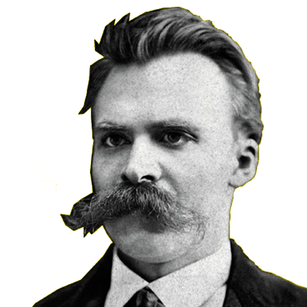

Gülmek, insanoğlunun en temel ve evrensel eylemlerinden biridir. Felsefi açıdan, gülmek, varoluşumuzun farklı yönlerini ortaya koyan bir eylemdir. Ancak, herkes için bu eylem aynı anlamı taşımaz. Bazı insanlar için gülmek, samimiyetsizliğin, zorunluluğun ya da baskının bir göstergesi olabilir. Bu durum, bireylerin içsel dünyaları ve yaşam deneyimleri ile şekillenir.
Gülmekten keyif almayan bir kişinin hayatında, belki de daha sessiz ve içsel bir derinlik bulunur. Tıpkı bir şiirin en derin mısralarının sessizlikte yankılanması gibi, gülmeyen kişi de yaşamın anlamını ve güzelliğini farklı şekillerde keşfeder. Bu, hayatın daha az görünen ama en az gülmek kadar değerli olan yönlerini ortaya çıkarır. Sonuç olarak, gülmekten keyif almamak bir eksiklik değil, farklı bir varoluş biçimidir. Her birey, kendi içsel dünyasında anlam ve mutluluğu farklı yollarla bulur ve bu farklılıklar, insan deneyiminin zenginliğini oluşturur.
